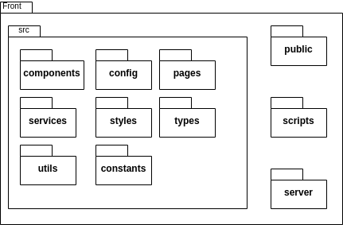
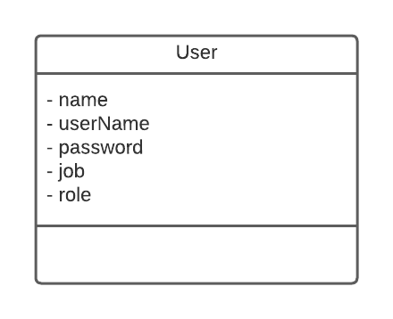
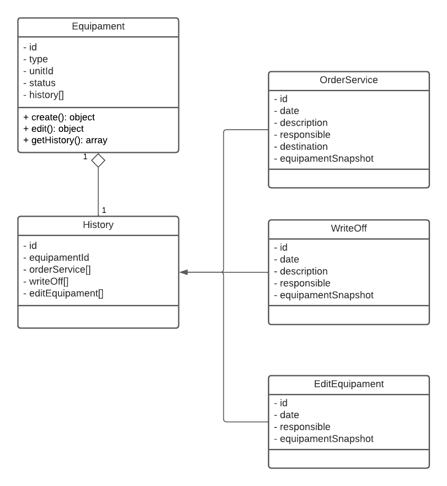

Documento de arquitetura
1. Introdução
Este documento tem como principal objetivo elucidar as principais caracteristicas da arquitetura proposta para o software Alectrion, utilizando diferentes visões arquiteturais para destacar diferentes aspectos do sistema, trazendo uma visão geral de toda a arquitetura do sistema. Deste modo facilitando a entendimento da arquiterua para os desenvolvedores.
1.1. Visão Geral
Este documento está estruturado da seguinte forma: - Introdução - Representação arquitetural - Visão lógica - Visão de dados - Referências bibliográficas - Histórico de versão
2. Representação arquitetural
2.1. Diagrama de relações

O estilo arquitetural de microsserviços consiste em uma abordagem arquitetural a qual uma aplicação é composta por serviços menores, que são implementados de forma independente com acomplamento fraco. Esses serviços independente podem, normalmente, se comunicar entre si utilizando de APIs e são organizados por recurso de negócios.
A arquitetura de microsserviços acelera o desenvolvimento e também facilita a escalabilidade de uma aplicação. Este padrão arquitetural será utilizado no Electrion. O padrão de base de dados por serviço também será utilizada, onde cada microsserviço possuíra uma base de dados independente.
2.2. Representação dos serviços
2.2.1. Gateway
O gateway é responsável para realizar a interface do usuário com os demais serviços da aplicação, provendo autenticação e autorização.
2.2.2. Usuário
O serviço de usuário é responsável por gerenciar os usuários da aplicação.
2.2.3. Equipamento
O serviço de equipamento é responsável por gerenciar os equipamentos da aplicação, bem como ordens de serviço e movimentações.
2.2.4. Front-end
O front-end é a interface pela qual o usuário irá interagir com a aplicação.
2.3. Tecnologias
2.3.1. React
O React consiste em uma biblioteca JavaScript para desenvolvimento de interfaces de usuário baseada em componentes, permitindo a criação de componentes encapsulados que gerenciam seu próprio estado que, quando combinanos, possibilitam a criação de UIs complexas. O React será utilizado no front-end.
2.3.2. Node.js
O Node.js é uma plataforma de aplicação para JavaScript com o objetivo principal de facilitar a construção de aplicações escaláveis. O Node.js é geralmente utilizado no lado do servidor e é orientado para o estilo de programação voltada a evento, sendo leve, eficiente e uma boa alternativa para arquitetura de microsserviços. O Node.js será utilizado em todos os serviços do back-end.
2.3.3. PostgreSQL
O PostgreSQL é um sistema gerenciador de banco de dados relacionais de código aberto. O PostgreSQL será utilizado para gerenciar as bases de dados dos serviços da aplicação.
3. Visão lógica
3.1. Diagrama de pacotes


3.2. Diagrama de implantação

3.3. Diagrama de classe
3.3.1. Microsserviço de usuário

3.3.2. Microsserviço de equipamentos

4. Visão de dados
4.1. Diagrama lógico

5. Referências Bibliográficas
[1] EQUIPE ALECTRION 2022-2. Documento de Arquitetura. Disponível em: https://fga-eps-mds.github.io/2022-2-Alectrion-DOC/#/./Documentos/arquitetura
[2] SOARES, João Pedro; ESTANISLAU, Matheus. Documento de Arquitetura. Disponível em: https://fga-eps-mds.github.io/2022-1-Alectrion-DOC/documentation/Documentos/documento-arquitetura.html. Acesso em: 8 dez. 2022.
[3] PATROCÍNIO, Sofia; GOUVEIA, Micaella; PEREIRA, Samuel; TAIRA, Luis Henrique; MUNIZ, Amanda. Chatbot Gaia: Documento de Arquitetura. Disponível em: https://fga-eps-mds.github.io/2019.1-Gaia/#/projeto/DocArquitetura. Acesso em: 8 dez. 2022.
[4] RICHARDSON, Chris. Database per service. Disponível em: https://microservices.io/patterns/data/database-per-service.html. Acesso em: 8 dez. 2022.
[5] CREATELY. O Guia Fácil de Diagramas de Implantação UML. Disponível em: https://creately.com/blog/pt/diagrama/tutorial-do-diagrama-de-implantacao. Acesso em: 11 dez. 2022.
6. Histórico de versão
| Data | Descrição | Autore(es) |
|---|---|---|
| 17/05/2023 | Adição do documento | João Vitor |
| 23/05/2023 | Revisão do documento | Dafne Moretti |
| 25/05/2023 | Atualização do diagram de pacote do front | João Vitor |
| 26/05/2023 | Revisão do documento | Lucas Lima |